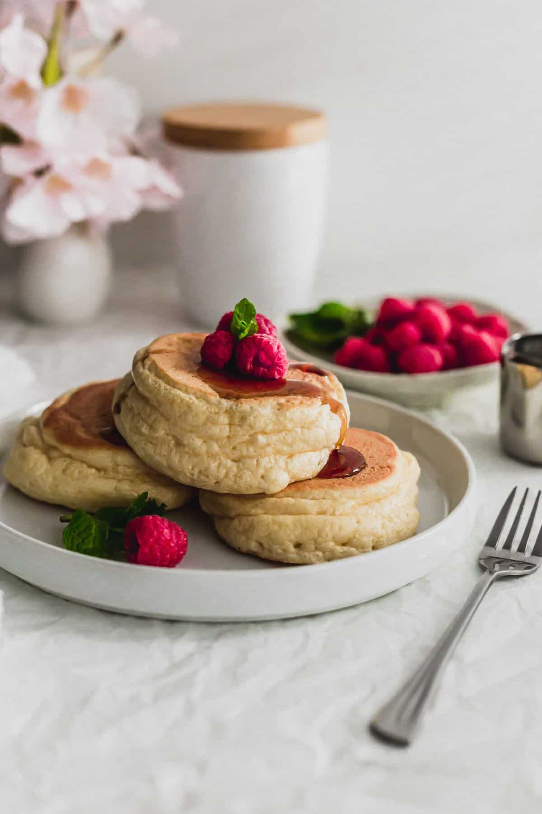
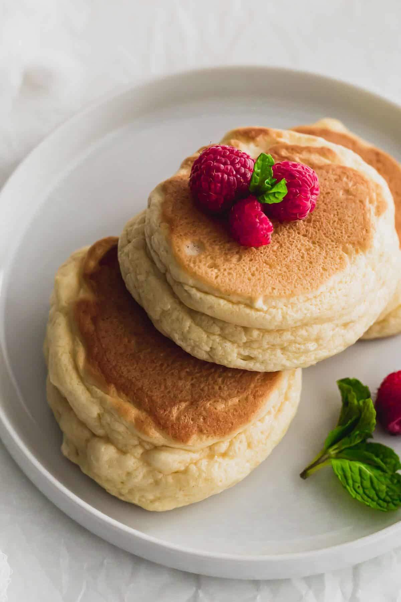

Japanese Soufflé Pancakes

Description
These Japanese Soufflé Pancakes are super light, airy and fluffy. Whipped egg white meringue give these pancakes their sky-high lift and soft, airy texture.
What are Japanese Soufflé Pancakes?
Japanese soufflé pancakes are based on the method of making French soufflés.
What are Soufflés?
Soufflés are a light and puffy baked egg dish, originating from France.
Egg whites are whipped to stiff peaks and are folded in to the base consisting of egg yolks and various flavours.
Equipments you will need:
- Flat top griddle: if you don't have one, you can certainly use a large frying pan.
- Tall lid: to cover, you'll need one that is tall enough to clear the soufflé pancakes.
- Spatula: preferably one that has a thin edge to really get under the pancakes with ease; I like using a silicone spatula for this.
- Ice cream scoop with trigger: for easily scooping the batter and dropping it onto the griddle pan.
- Water spray bottle: for spraying the pancakes to create steam.
Ingredients:
- 2 egg yolks
- 3 egg whites
- Milk
- Granulated cane sugar
- Vanilla extract
- All-purpose flour
- Baking powder
- Cream of tartar
- Granulated sugar
Steps:
- Make the pancake batter: In a medium bowl, whisk together the 2 egg yolks, sugar, milk, oil and vanilla extract. Add in the flour, baking powder and mix with a spatula until just combined. Don't over mix!
- Whip egg whites to stiff peaks: Add the 3 room temperate egg whites into a clean stand mixer bowl fitted with a whisk attachment. Whip the egg whites, first starting on low speed and gradually increasing. When until bubbles appear, add in cream of tartar (or lemon juice) and gradually add in the granulated sugar. Continue whipping the egg whites until it reaches stiff peaks. (When the whisk is pulled out, the meringue sticks straight up, or you can turn the bowl upside down and nothing will drip).
- Fold in egg whites in 3rds: Working in 3rds, with a spatula, fold in ⅓rd of the egg white mixture into the egg yolk mixture to lighten.
- Fold in remaining egg whites: Continue folding in the remaining egg white mixture into the egg yolk mixture until homogenous, but be careful not to overmix.
- Cook the soufflé pancakes: Heat a flat griddle pan over medium-low heat. Lightly grease with vegetable oil and use a paper towel to dab off any excess. Using a large ice cream scoop with trigger, place 1 scoop of the pancake batter onto the griddle, leaving 2-3" of space in between pancakes. Spray the pancakes with water (using a spray water bottle) and cover with a lid. Cook for 4 minutes. Remove the lid and add a second scoop of pancake batter ON TOP of the pancakes. Again, spray the pancakes with water and cover with the lid. Cook for another 4 minutes. Remove the lid and carefully flip the pancakes with a spatula. Give the pancakes another few spritzes of water and cover with the lid. Cook for 5 more minutes. Remove the lid and carefully transfer the pancakes to a plate. Repeat with the remaining batter.
- Enjoy!
